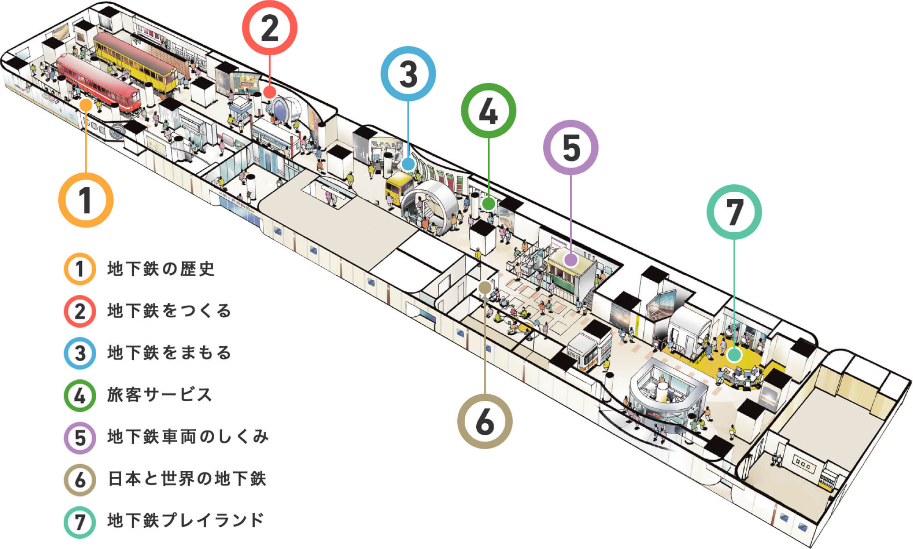
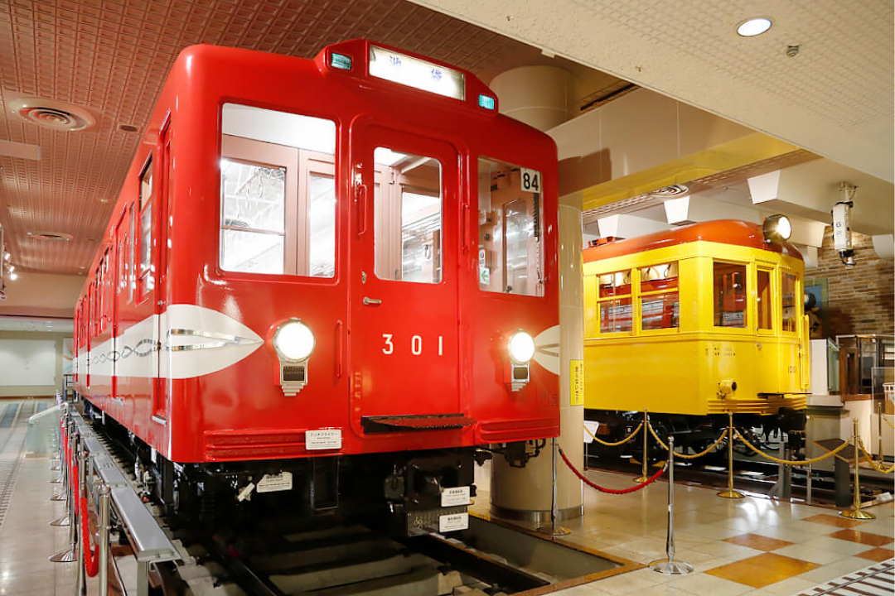
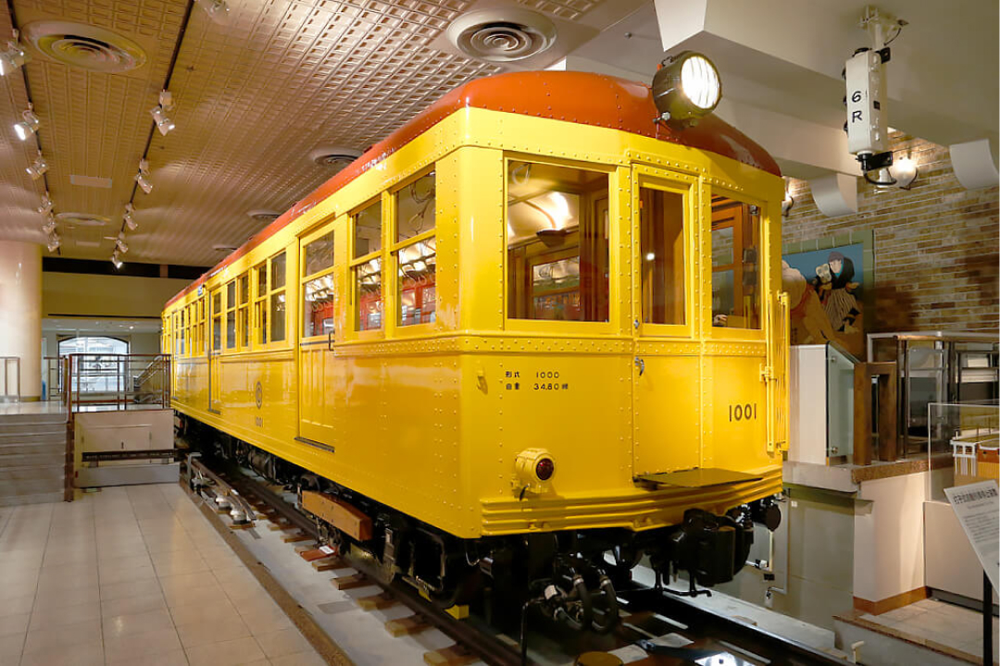
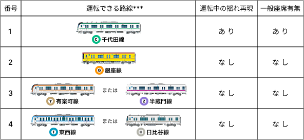
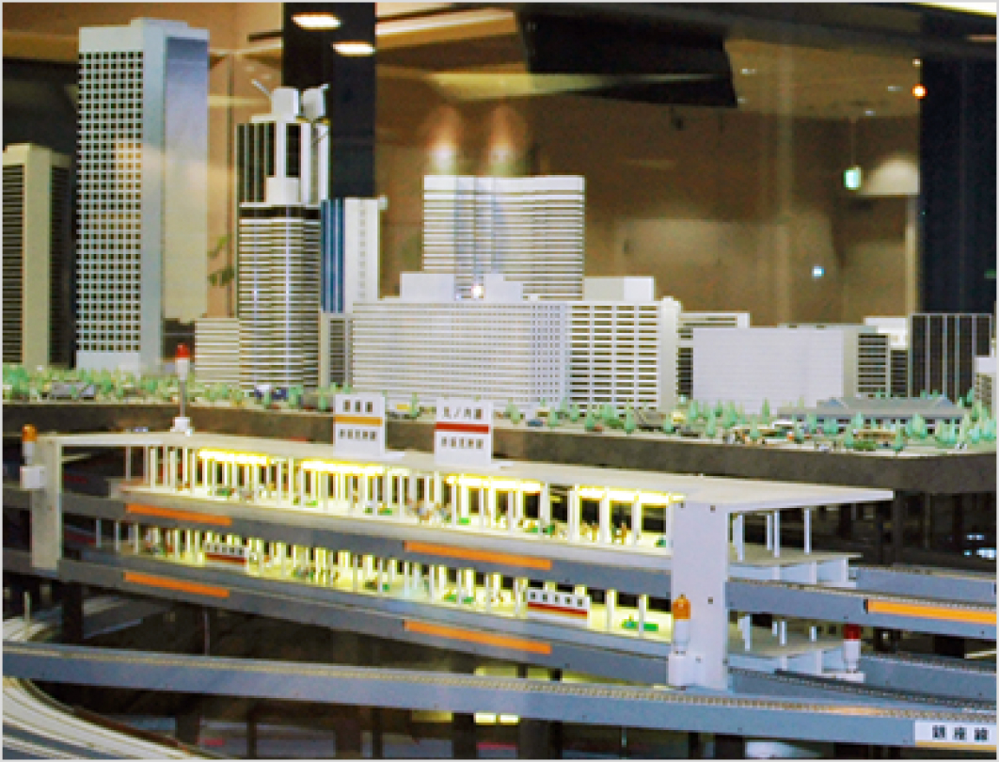
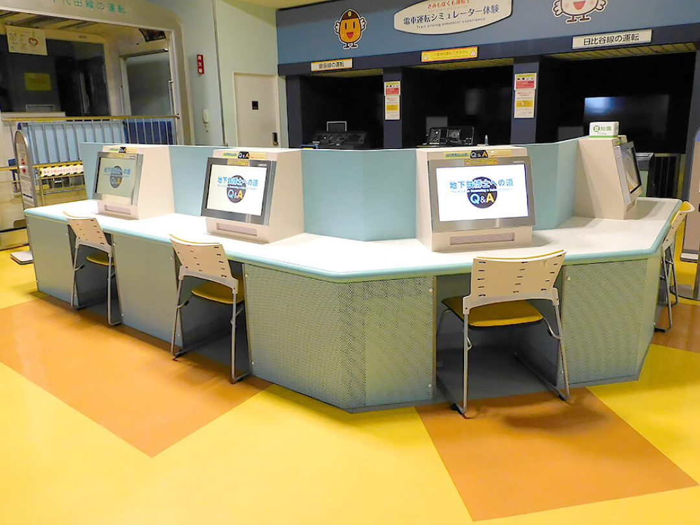

館内案内

地下鉄の歴史
日本ではじめての地下鉄が開通してから、現在までの歴史を紹介しています。

丸ノ内線301号車

地下鉄車両1001号車（国の重要文化財指定）
地下鉄をつくる
トンネルのつくり方や、建設技術を紹介しています。

シールドマシンカッターディスク

アンダーグラウンド3Dシアター
地下鉄をまもる
総合指令所の指令体験を中心に、地下鉄が安全に走るための取り組みを紹介しています。

総合指令所体験スペース

単線シールドトンネル
旅客サービス
地下鉄を、より使いやすく、より気持ちよく利用してもらうための取り組みを紹介しています。

サインシステム
地下鉄車両のしくみ
地下鉄がどのようにして走るのか？どのようにブレーキが掛かるのか？
ここでは地下鉄車両が安全に走るためのしくみを紹介しています。

東京高速鉄道129号車

銀座線01系車両
日本と世界の地下鉄
日本全国の地下鉄や、世界の地下鉄を紹介しています。

日本と世界の地下鉄コーナー
地下鉄プレイランド
電車運転シミュレーター

電車運転シュミレーター（千代田線）
電車運転シミュレーター
本物と同じ電車の運転台が操作でき、運転中の揺れまで
体験できる、臨場感あふれるシミュレーターです。
運転台だけでなく、一般座席からも走っている映像*が
見えるので、家族みんなで楽しむことができます。
運転できる路線は以下の図**をご参照にしてください。
なお、番号｢3｣と｢4｣の運転できるそれぞれ２つの路線は
日替わりで実施しております。

*シミュレーター内の路線映像は過去の映像です。現在と異なる箇所がございます。
**図に表示してる各路線の車両イラストは運転できる車両ではございません。またシミュレーターで運転する車両は実際に路線で使用してる車両と異なる場合がございます。
***お客様により良い運転体験を行うため、点検やメンテナンスなど、予告なく稼働中止する場合がございます。予めご了承ください。また、返金などの補償について対応しかねます。
メトロパノラマ
東京の地下をどのように電車（鉄道）が走っているのか
分かります。運行は1日4回（11：00、13：00、14：00、
15：00）実施しています。※土・日・祝日は自動運転です。

メトロパノラマコーナー
地下鉄Ｑ&Ａ
地下鉄に関するクイズが、｢初級｣・｢中級｣・｢上級｣の3つの
レベルで、それぞれ5問づつ出題されます。
ご家族や友達同士で力を合わせ、全問正解を目指しましょう。

地下鉄Q&Aコーナー